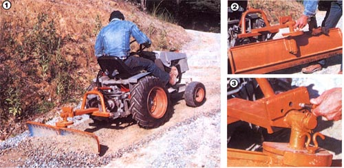

Our mini-tractor's first implement will work with any Category 0 tractor hitch!
Just last year, in MOTHER NO. 78 (on page 172), we completed a three-part feature article about a sturdy home built mini tractor that our research crew put together for about half the price of the factory-made offerings. The photos included in that piece depicted a handy little Category 0 scrape blade that, if you remember, we promised to detail in a future issue . . . and, with the winter season upon us, we thought that now would be a perfect time to describe the construction of that particularly versatile implement.
The heart of our budget blade is nothing more than a 12" X 48" section cut from the wall of a discarded water-heater tank. With its fairly heavy-gauge material and ideal contour, it provides an excellent starting point, but be aware that-unless you can locate a 66- or 82gallon "highboy"-style tank (these models have a diameter of at least 20", and a length of 48" or more)-you'll have to cut two sections from a short, squat tank (30-, 40-, or 52-gallon capacity), and then weld them together to achieve the desired dimensions. Keep in mind, too, that galvanized vessels give off harmful fumes when welded, so you may want to limit your search to standard black steel tanks.
To prevent the blade from flexing under stress, you'll need to weld stiffeners to its back to form a perimetric framework. The horizontal ones are 45-1/2" long, and can be made from 1/4" X 1" angle iron. The vertical braces-which have to assume the curve of the tank-can be either cut from 1/4" plate or formed (with heat) from 1/4" X 1-1/4" X 12" flat stock.
Once all that's done, you can tackle the blade's main frame. It consists of an 11 gauge rectangular tubular steel base (measuring 1-5/8" X 4" X 21-1/2") that's fastened at right angles to a 1-5/8" X 4" X 18-1/4" arm made of the same material. Of course, if you have stock of another size lying around, use it . . . because a substantial piece of square, round, or even channel steel will work just as well.
On the upper surface of the main frame we've installed a top link wishbone formed from a 27" length of 1-3/4"-diameter tubing. The crown of this hoop-shaped hanger should be about 10 inches above the base beam, and a pair of 1/4" X 1-1/2" X 2-1/2" top link pin brackets must be welded above this. (To position them correctly, use the rod end joint on the top link as a drilling and spacing guide). Although we employed a section of preformed roll bar when building this wishbone, muffler tubing or 1/2" flat bar stock-bent to shape could serve the same purpose.
The ends of the main frame are capped with 1/4" X 1-1/2" X 4" plates . . . but, before beading them in place, you'll have to center drill them with a 5/8" bit and weld the 5/8" X 3" hitch pins from the back side. A third, undrilled, plate covers the front end of the frame's arm.
Like any conventional scraping blade, ours is designed to pivot on both a horizontal and a vertical plane to execute various kinds of cuts. Start fabricating the horizontal pivot by cutting the three 1/2" X 6" swivel-bracket sections to 1", 2", and 4" widths as shown in the diagram (J, K, and L). Clamp the 2" and 4" pieces together and drill the three 1/2" locking pin holes (1-1/2 inches apart and on a 2-1/4" radius), then use a 1-1/2" hole saw to bore another opening (it must be centered over that axis).
At this point, you can make up the horizontal pivot shaft by grinding and drilling a 1-1/2" X 5-1/2" cold-rolled rod . . . forming a 45° I/2"-deep bevel at one end and a 1/4" hole through the other. Weld the beveled end of this shaft to the 1/2" X 4" X 6" swivel bracket section (the "slice" offers an increased surface area to assure a strong joint), and fasten that piece to the rear of the blade frame's arm.
You'll now need to fabricate two 112" X 8" round steel disks (for the vertical pivot) and a 1/2" X 5-1/2" disk to serve as the horizontal pivot plate. The 5-112"-diameter component should be given a 1-I/2" center hole, and then a 1-I/2" X 3-3/8" section of pipe-the horizontal pivot collar-must be aligned and welded over the opening. Next, bevel and drill the 1-1/2" X 11" vertical pivot shaft just as you did the horizontal pinion, and attach it perpendicularly to the horizontal pivot collar, taking care not to extend the bead any farther down the rod than is necessary to fill the joint.
The lower half of the vertical swivel bracket can now be formed from a 1/2" X 21I2" X 6-1/2" section of flat plate. When that's done, the steel crescent can be clamped to one of the 1/2" X 8" disks you made previously, and three 1/2" holes can be drilled through both pieces-spaced 1-3/4" apart-near the edge. Then separate the pieces . . . drill a 1-1I2" bore through the center of the full circle . . . weld the I-1/2" X 2" vertical bracket collar over that hole . . . slip this assembly over the vertical pivot shaft and join both pipe collars together at their union . . . and go on to weld the collars and the internal shaft together as one, using a full, penetrating bead.
Next, lift the entire assembly and slide it onto the horizontal pivot shaft, and lock it in place with a flat washer and a cotter pin. . (This washer, as well as the one you'll later use on the vertical shaft, can be made from 1/4" plate and center-bored with a 1-112" metal cutting hole saw.)
Now, you're ready to finish up the horizontal swivel bracket by fastening the back and the top pieces to the 1/2" X 4" X 6" component, thereby forming a housing around the horizontal pivot plate. That semicircular unit can then be drilled-using the holes already in the bracket as a guide allowing the blade to be set at a number of horizontal angles. (Start by making the initial 1/2" hole that will position the scraper at dead level . . . then, to the right and left of that, make two more receivers 3/4 inch away, and drill the last two openings at points 3116 inch from the second two.)
The vertical swivel bracket is made in much the same way. First, bore a 1-1/2" opening in the center of your last 8"diameter disk, then weld the 1-1/2" X 7" pipe over that hole. Slide this collar-and plate assembly onto the vertical pivot shaft, and hold it with the flat washer and a cotter pin, ac before
With that done, form the curved part of the vertical bracket from a 1/2" X 1" X 8" flat plate (which should match the contour of an 8 "diameter circle), and weld it to both the crescent-shaped piece you cut earlier and the 1/2" X 8"-round vertical bracket component already fastened to the collar . . . with the 1/2" X 8" vertical pivot plate between. Once more, drill a series of 1/2" holes through the pivot plate so that the blade can be angled . . . but this time repeat the set, positioning these end series directly opposite your first group so that the scrap er can be completely turned around if necessary.
To attach the blade to the frame, you'll first have to hitch that carriage to the rear of your tractor, using the side pins and the top link as you would normally. Level the frame, then lay the blade in position against the vertical pivot collar with the bottom edge forward of the top one (assuming, naturally, that the concave surface is toward the front). Now, make a cardboard template of the two blade-fastening gussets to make sure that the contours are correct, transfer the pattern to 1/4" plate steel, and cut out the parts. Weld them between the collar and the upper half of the blade . . . and your implement is complete!
Of course, you'll need to make two locking pins from 1/2" X 2" bolts (bent sections of 1/4" rod welded to the heads make nice handles), and you'll probably want to paint the blade and frame. Other than that,though, the only addition you might consider is a I/4" X 2" X 48" face bar, to save the water tank skin's cutting edge from excessive wear under rough conditions.
|
 [I]The home built blade can be used to push or draw-with equal ease. [2] A vertical pivot allows a full range of scrape angles for such tasks as grading and smoothing. Note the reinforcing framework at the blade's edges. [3] At horizontal pivot enables the cutter to be used for shallow ditching and crowning. |
|
|